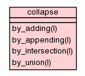

Class collapse

Collapse lists in specific ways
>>> collapse.by_adding([1,5,2])
8
>>> collapse.by_adding([3])
3
>>> collapse.by_appending([[1,5],[5,3],[2,1]])
[1, 5, 5, 3, 2, 1]
>>> collapse.by_appending([[1,2,3]])
[1, 2, 3]
>>> collapse.by_union([[1,5],[5,3],[2,1]])
[1, 2, 3, 5]
>>> collapse.by_intersection([[1,5,4],[5,3,3],[2,6,5]])
[5]
|
Inherited from object:
__delattr__,
__format__,
__getattribute__,
__hash__,
__init__,
__new__,
__reduce__,
__reduce_ex__,
__repr__,
__setattr__,
__sizeof__,
__str__,
__subclasshook__
|
|
Inherited from object:
__class__
|